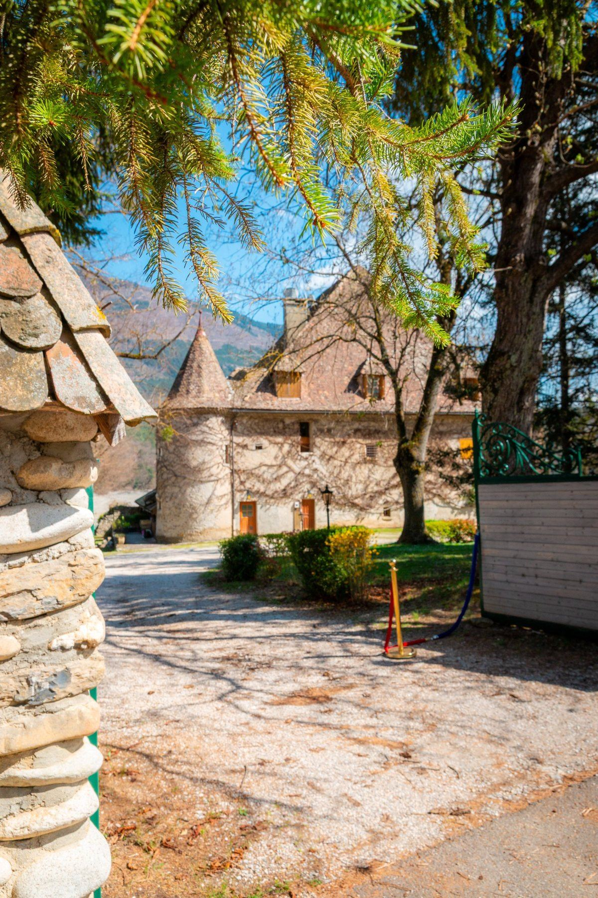

A country wedding by the lake.
The château for the whole weekend: drinks on the lawn facing the water, dinner at long tables, your family and friends sleeping on site, and brunch in the sun the next day.
Get the wedding brochure
Your weekend at the château
- FridayYour family and friends settle into the 13 bedrooms, 39 beds in all. First drinks under the trees.
- SaturdayDrinks on the lawn above the lake, dinner at long tables, and a party that carries on under the vaults.
- SundayBrunch in the sun, feet in the grass. Nobody is in a hurry to leave.

Clear pricing
- Peak season: May, June, Septemberfrom €8,000May from €8,000, June and September from €9,000. The château from Friday evening to Sunday, 39 beds included.
- Mid-season: April, Octoberfrom €6,500April from €6,500, October from €7,000.
- Winter: November to Marchfrom €4,500Fireplace, vaulted cellars and mulled wine: a winter wedding has its charms.
- Dinner, with our cheffrom €80 / pers.Three menus designed with the chef, from €80 to €130. Next-day brunch €35.
Someone by your side, from the first visit to the big day
- A dedicated coordinatorYou know them from the start. They are there on the day and welcome your guests on arrival.
- Suppliers we knowFlorists, photographers, musicians: a short list we recommend.
- Our chef in the kitchenMenus planned with you, so there are no surprises on the day.


The setting is already there
Wooded grounds running down to turquoise water, an ivy-covered façade, a stone turret, the mountains opposite. And your guests can go paddleboarding, sailing or hiking all weekend.
Questions couples ask
Can we hold a celebrant-led ceremony at the château?
Yes, on the lawn, facing the mountains. If it rains, the ceremony moves into the 220 m² vaulted cellars, or under a marquee that can be hired.
How late can the party go on?
Until 4 am.
Who does the catering?
Our chef, with three menus from €80 to €130 per person and a next-day brunch at €35.
What is provided?
Tables, chairs and tableware. Sound and decoration are arranged with your suppliers; we can recommend ours.
Where do guests stay beyond the 39 beds?
There are campsites and gîtes close by, and we’ll share our recommendations.
How far ahead should we book?
At least a month ahead, but many dates are booked a year in advance. A 30% deposit confirms the booking.
Can our dogs come?
Yes, pets are welcome.
Come and see the place
We’ll send the brochure and suggest a visit. We host weddings from September to June, winter included.